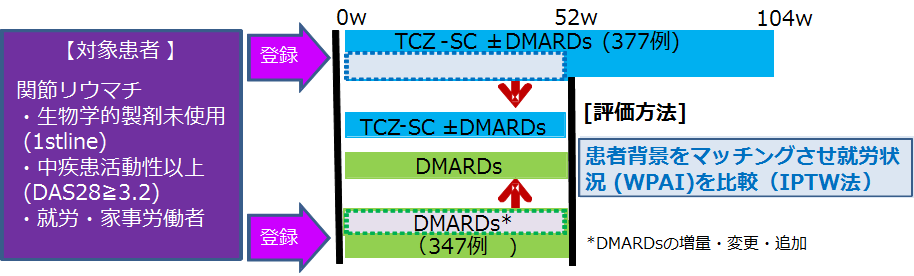

労働生産性についてDMARDsと比較した試験にて、アクテムラ皮下注はQOLが有意に改善した（FIRST ACT-SC）
TCZ-SCで治療されたバイオナイーブRA患者での全労働生産性の改善：前向き実臨床観察研究
方法：TCZ-SCによる就労および家事労働改善を抗リウマチ薬(DMARDs)治療群との比較した

- ・PE：Work Productivity and Activity Impairment Questionnaire (WPAI)を用いた就労者のPercent overall work impairment (OWI) 変化量(52週時点)
- ※OWI: 全労働の障害率、RAが仕事を障害した時間の割合
52週時で全労働生産性（OWI）について、両群間に有意差は見られなかったが、TCZ-SC使用により主婦や全集団の活動障害度、疾患活動性、QOLはcsDMARD群よりも有意に改善した
Tanaka Y, et al. ACR2017. #417